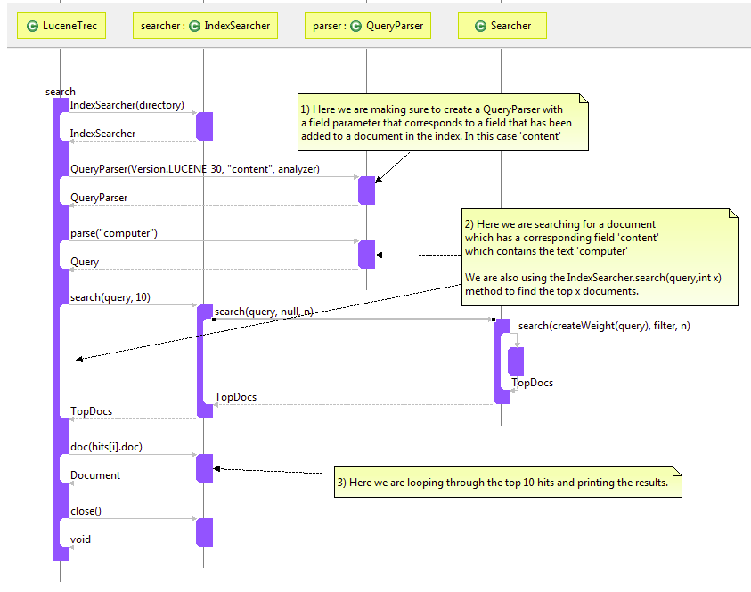

Documenting with Sequence Diagrams
The following tips will help you document code details and logic in a sequence diagram.- If there is a complicated section of relationships or time sensitive portion of code in your class diagram / code concept you may want to expand on it with a sequence diagram.
- Open a method call (or collection of classes / method calls)
- Follow forward connections to relevant methods.
- Show all calls if you want to show the details of a specific method.
- Overridden methods can be shown by clicking the small up arrow
- Overridden method connections can be shown all the time by right clicking on the connection and clicking show always
- Once you have expanded the important methods and are displaying the minimum amount of useful information necessary to convey the concept you should add comments
- The image below is a good example of a sequence diagram.
Search Text with Lucene
---- Your question not answered? Send an email to support@architexa.com ----
{kind=link}